pyFormex tutorial¶
Warning
This document is currently under revision!
Abstract
This tutorial will guide you step by step through the most important concepts of the pyFormex scripting language and the pyFormex Graphical User Interface (GUI). It is intended for first time users, giving explicit details of what to do and what to expect as result.
The philosophy¶
pyFormex is a Python implementation of Formex algebra. Using pyFormex, it is very easy to generate large geometrical models of 3D structures by a sequence of mathematical transformations. It is especially suited for the automated design of spatial structures. But it can also be used for other tasks, like operating on 3D geometry obtained from other sources, or for finite element pre- and postprocessing, or just for creating some nice pictures.
By writing a simple script, a large and complex geometry can be created by copying, translating, rotating, or otherwise transforming geometrical entities. pyFormex will interpret the script and draw what you have created. This is clearly very different from the traditional (mostly interactive) way of creating a geometrical model, like is done in most CAD packages. There are some huge advantages in using pyFormex:
- It is especially suited for the automated design of spatial frame structures. A dome, an arc, a hypar shell, ..., when constructed as a space frame, can be rather difficult and tedious to draw with a general CAD program; using scripted mathematical transformations however, it may become a trivial task.
- Using a script makes it very easy to apply changes in the geometry: you simply modify the script and re-execute it. You can easily change the value of a geometrical parameter in any way you want: set it directly, interactively ask it from the user, calculate it from some formula, read it from a file, etcetera. Using CAD, you would have often have to completely redo your drawing work. The power of scripted geometry building is illustrated in figure Same script, different domes: all these domes were created with the same script, but with different values of some parameters.

Same script, different domes
- At times there will be operations that are easier to perform through an interactive Graphical User Interface (GUI). The GUI gives access to many such functions. Especially occasional and untrained users will benefit from it. As everything else in pyFormex, the GUI is completely open and can be modified at will by the user’s application scripts, to provide an interface with either extended or restricted functionality.
- pyformex scripts are written in the Python programming language. This implies that the scripts are also Python-based. It is a very easy language to learn, and if you are interested in reading more about it, there are good tutorials and beginner’s guides available on the Python website (http://www.python.org/doc). However, if you’re only using Python to write pyFormex scripts, the tutorial you’re reading right now should be enough.
Getting started¶
Start the pyFormex GUI by entering the command pyformex in a terminal. Depending on your instalation, there may also be a menu item in the application menu to start pyFormex, or even a quickstart button in the panel. Using the terminal however can still be useful, especially in the case of errors, because otherwise the GUI might suppress some of the error messages that normally are sent to the terminal.
Create a new pyFormex script using the File‣Create new script option, and enter a filename with extension .py. This will open up your favorite editor with a pyFormex script template like the one below.
1 2 3 4 5 6 7 8 9 10 11 12 13 14 15 16 17 18
#!/usr/bin/env pyformex --gui """Script Template This is a template file to show the general layout of a pyFormex script. In the current version, a pyFormex script should obey the following rules: - file name extension is '.py' - first (comment) line contains 'pyformex' The script starts by preference with a docstring (like this), composed of a short first line, then a blank line and one or more lines explaining the intention of the script. """ print "This is the pyFormex template script" # End
Note
If the editor does not open, you may need to configure the editor command: see Settings –> Commands.
Make sure you are using an editor that understands Python code. Most modern editors will give you syntax highlighting and help with indentation.
The template script shows the typical layout of a pyFormex script:
- The script starts with a line #!/usr/bin/env pyformex.
- Then comes a multiline documentation string, contained between two """ delimiters. Read it: it repeats this instructions on how a legal pyFormex script should be structured.
- Next are the pyFormex instructions: in this case there’s only one line.
- The script ends with a comment line # End. We recommend you to do this also. It serves as a warning for inadvertent truncation of your file.
In the status bar at the bottom of the pyFormex GUI, you will now see the name of the script, together with a green dot. This tells you that the script has been recognized by the system as a pyFormex script, and is ready to run.
Execute the script by selecting the File ‣ Play menu option, or by just pushing the button in the toolbar. In the message area just above the status bar, a line is printed announcing the start and end of execution. Any output created by the script during execution will be displayed in between this two lines. As expected, the template script just prints the text from line 16 of the script.
Now change the text of the string in line 16, but do not save your changes. Execute the script again, and notice that the printed text has not changed! This is because the editor is an external program to pyFormex, and the executed script is always the text as read from file, not necessarily equal to what is displayed in your editor.
Save the script, run it again, and you will see the output has changed.
Next, change the text of the script to look like the one below, and save it as example1.py. Again, note that the editor and pyFormex are separate programs, and saving the script does not change the name of the current script in pyFormex.
Selecting an existing script file for execution in pyFormex is done with the File ‣ Open option. Open the example1.py file you just saved and check that its name is indeed displayed in the status bar. You can now execute the script if you want, but it will not produce anything visible. We’ll learn you how to visualize geometry later on.
1 2 3 4 5 6
#!/usr/bin/env pyformex --gui """Example 1""" F = Formex([[[0.,0.],[1.,0.]],[[1.,1.],[0.,1.]]]) # End
Exit pyFormex (using the File ‣ Exit) and then restart it. You should again see the example1.py displayed as the current script. On exit, pyFormex stores your last script name, and on restart it prepares to run it again. You can also easily select one the most recent scripts you used from the File ‣ History option. Select the oldest (bottom) one. Then close all your editor windows.
Open the example1.py again, either using File ‣ Open or File ‣ History. The script will not be loaded into your editor. That is becaused often you will just want to run the script, not change it. Use the File ‣ Edit option to load the current script into the editor.
Now that you know how to load, change and execute scripts in pyFormex, we’re all set for exploring its power. But first, let’s introduce you to some basic Python and NumPy concepts. If you are already familiar with them, you can just skip these sections.
Some basic Python concepts¶
pyFormex is written in the Python language, and Python is also the scripting language used by pyFormex. Since the whole intent of pyFormex is to generate geometrical structures from scripts, you will at least need to have some basic knowledge of Python before you can use it for your own projects.
The Python documentation website contains a variety of good documents to introduce you. If you are new to Python, but have already some programming experience, the Python tutorial may be a good starting point. Or else, you can take a look at one of the other beginners’ guides. Stick with the Python 2.x documentation for now. Though pyFormex might one day use Python 3.x, we are still far off that day, because all the underlying packages need to be converted to Python 3 first.
Do not be afraid of having to learn a new programming language. Python is known as own of the easiest languages to get started with: just a few basic concepts suffice to produce quite powerful scripts. Most developers and users of pyFormex have started without any knowledge of Python.
For the really impatient who do not want to go through the Python tutorial before diving into pyFormex, we have gathered hereafter some of the most important Python concepts, hopefully enabling you to continue with this tutorial.
Here is a small example Python script.
1 2 3 4 5 6 7 8 9 10 11 12 13 14 15 16 17 18 19 20 21 22 23 | #!/usr/bin/env python
"""Python intro
A short introduction to some aspects of the Python programming language
"""
for light in [ 'green','yellow','red','black',None]:
if light == 'red':
print 'stop'
elif light == 'yellow':
print 'brake'
elif light == 'green':
print 'drive'
else:
print 'THE LIGHT IS BROKEN!'
appreciation = { 0: 'not driving', 30:'slow', 60:'normal', 90:'dangerous', 120:'suicidal'}
for i in range(5):
speed = 30*i
print "%s. Driving at speed %s is %s" % (i,speed,appreciation[speed])
|
A ‘#’ starts a comment: the ‘#’, and anything following it on the same line, is disregarded. A Python script typically starts with a comment line like line 1 of the above script.
Strings in Python can be delimited either by single quotes (‘), double quotes (“) or by triple double quotes (“”“). The starting and ending delimiters have to be equal though. Strings in triple quotes can span several lines, like the string on lines 2-5.
Indentation is essential. Indentation is Python’s way of grouping statements. In small, sequential scripts, indentation is not needed and you should make sure that you start each new line in the first column. An if test or a for loop will however need indentation to mark the statement(s) inside the condition or loop. Thus, in the example, lines 8-15 are the block of statements that are executed repeatedly under the for loop construct in line 7. Notice that the condition and loop statements end with a ‘:’.
You should make sure that statements belonging to the same block are indented consistently. We advice you not to use tabs for indenting. A good practice commonly followed by most Python programmers is to indent with 4 spaces.
The indentation makes Python code easy to read for humans. Most modern editors will recognize Python code and help you with the indentation.
Variables in Python do not need to be declared before using them. In fact, Python has no variables, only typed objects. An assignment is just the binding of a name to an object. That binding can be changed at each moment by a new assignment to the same name.
Sequences of objects can be grouped in tuples or lists, and individual items of them are accessed by an index starting from 0.
Function definitions can use both positional arguments and keyword arguments, but the keyword arguments mus follow the positional arguments. The order in which keyword arguments are specified is not important.
You can used names defines in other modules, but you need to import those first. This can be done by importing the whole module and then using a name relative to that module:
import mymodule print mymodule.some_variable
or you can import specific names from a module:
from mymodule import some_variable print some_variable
or you can import everything from a module (not recommended, because you can easily clutter your name space):
from mymodule import * print some_variable
Some basic NumPy concepts¶
Warning
This section still needs to be written!
Numerical Python (or NumPy for short) is an extension to the Python language providing efficient operations on large (numerical) arrays. relies heavily on NumPy, and most likely you will need to use some NumPy functions in your scripts. As NumPy is still quite young, the available documentation is not so extensive yet. Still, the tentative NumPy tutorial http://www.scipy.org/Tentative_NumPy_Tutorial already provides the basics.
If you have ever used some other matrix language, you will find a lot of similar concepts in NumPy.
To do: Introduce the (for users) most important NumPy concepts.
pyFormex uses the NumPy ndarray as implementation of fast numerical arrays in Python.
The Formex data model¶
The most important geometrical object in pyFormex is the Formex class. A Formex (plural:Formices) can describe a variety of geometrical objects: points, lines, surfaces, volumes. The most simple geometrical object is the point, which in three dimensions is only determined by its coordinates (x,y,z), which are numbered (0,1,2) in pyFormex to be consistent with Python and NumPy indexing. Higher order geometrical objects are defined as a collection of points. The number of points of an object is called the plexitude of the object.
A Formex is a collection of geometrical objects of the same plexitude. The objects in the collection are called the elements of the Formex. A Formex whose elements have plexitude 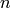 is also called an -plex Formex. Internally, the coordinates of the points are stored in a NumPy ndarray with three dimensions. The coordinates of a single point are stored along the last axis (2) of the Formex; all the points of an element are stored along the second axis (1); different elements are stored along the first axis (0) of the Formex. The figure The structure of a Formex schematizes the structure of a Formex.
The structure of a Formex
Warning
The beginning user should be aware not to confuse the three axes of a Formex with the axes of the 3D space. Both are numbered 0..2. The three coordinate axes form the components of the last axis of a Formex.
For simplicity of the implemented algorithms, internally pyFormex only deals with 3D geometry. This means that the third axis of a Formex always has length 3. You can however import 2D geometry: all points will be given a third coordinate 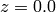. If you restrict your operations to transformations in the 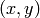-plane, it suffices to extract just the first two coordinates to get the transformed 2D geometry.
The Formex object F can be indexed just like a 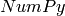
numerical array: F[i] returns the element with index  (counting
from
(counting
from  ). For a Formex with plexitude , the result will
be an array with shape 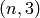, containing all the points of the element.
Further, F[i][j] will be a 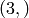-shaped array containing the
coordinates of point
). For a Formex with plexitude , the result will
be an array with shape 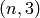, containing all the points of the element.
Further, F[i][j] will be a 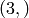-shaped array containing the
coordinates of point  of element . Finally, F[i][j][k] is
a single floating point value representing one coordinate of that point.
of element . Finally, F[i][j][k] is
a single floating point value representing one coordinate of that point.
In the following sections of this tutorial, we will first learn you how to create simple geometry using the Formex data model and how to use the basic pyFormex interface functions. The real power of the Formex class will then be established starting from the section Transforming a Formex.
Creating a Formex¶
There are many, many ways to create Formex instances in your scripts. Most of the geometrical operations and transformations in pyFormex return geometry as a Formex. But how do you create a new geometric structure from simple coordinate data? Well, there are several ways to do that too, and we’ll introduce them one by one.
Direct input of structured coordinate data¶
The most straightforward way to create a Formex is by directly specifying the coordinates of the points of all its elements in a way compatible to creating a 3D ndarray:
F = Formex([[[0.,0.],[1.,0.]],[[1.,1.],[0.,1.]]])
The data form a nested list of three levels deep. Each innermost level list holds the coordinates of a single point. There are four of them: [0.,0.], [1.,0.], [1.,1.] and [0.,1.]. Remark that we left out the third (z) coordinate and it will be set equal to zero. Also, though the values are integer, we added a dot to force floating point values.
Warning
Python by default uses integer math on integer arguments! We advice you to always write the decimal point in values that initialize variables that can have floating point values, such as lengths, angles, thicknesses. Use integer values only to initialize variables that can only have an integer value, such as the number of elements.
The second list level groups the points into elements. In this case there are two elements, each containing two points. The outermost list level then is the Formex: it has plexitude 2 and contains 2 elements. But what geometrical entities does this represent? The plexitude alone does not specify what kind of geometric objects we are dealing about. A 2-plex element would presumably represent a straight line segment between two points in space, but it could just as well be used to represent a sphere (by its center and a point on the surface) or a plane (by a point in the plane and the direction of the normal).
By default, pyFormex will interprete the plexitude as follows:
| Plexitude | Geometrical interpretation |
|---|---|
| 1 | Points |
| 2 | Straight line segments |
| 3 | Triangles |
| 4 or higher | Polygons (possibly nonplanar) |
We will see later how to override this default. For now, let’s draw Formices with the default. Go back to the example1.py script in your editor, containing the line above, and add the draw(F) instruction to make it look like:
F = Formex([[[0.,0.],[1.,0.]],[[1.,1.],[0.,1.]]])
draw(F)
Save the script and execute it in pyFormex. You will see the following picture appear in the canvas.
Two parallel lines
Now let’s remove the two central ‘]’ and ‘[‘ brackets in the first line:
F = Formex([[[0.,0.],[1.,0.],[1.,1.],[0.,1.]]])
draw(F,color=blue)
With the same data we have now created a 4-plex Formex with only one element. Execute the script again (do not forget to save it first) and you will see a square. Note that the draw command allows you to specify a color.
A square.
But wait a minute! Does this represent a square surface, or just the four lines constituting the circumference of the square? Actually, it is a square surface, but since the pyFormex GUI by default displays in wireframe mode, unless you have changed it, you will only see the border of the square. You can make surfaces and solids get fully rendered by selecting the Viewport ‣ Render Mode ‣ Flat option or using the shortcut 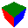 button in the toolbar. You will then see
The square in smooth rendering.
pyFormex by default uses wireframe rendering, because in a fully rendered mode many details are obscured. Switch back to wireframe mode using the Viewport ‣ Render Mode ‣ Wireframe menu option or 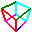 toolbar button.
Now suppose you want to define a Formex representing the four border lines of the square, and not the surface inside that border. Obviously, you need a 4 element 2-plex Formex, using data structured like this:
F = Formex([[[0.,0.],[0.,1.]], [[0.,1.],[1.,1.]], [[1.,1.],[1.,0.]], [[1.,0.],[0.,0.]]])
draw(F,color=blue,clear=True)
Try it, and you will see an image identical to the earlier figure A square.. But now this image represents four straight lines, while the same image formerly represented a square plane surface.
Warning
When modeling geometry, always be aware that what you think you see is not necessarily what it really is!
The clear=True option in the draw statement makes sure the screen is cleared before drawing. By default the pyFormex draw statement does not clear the screen but just adds to what was already drawn. You can make the clear=True option the default from the Viewport ‣ Drawing Options menu. Do this now before continuing.
Changing the rendering mode, the perspective and the viewpoint can often help you to find out what the image is really representing. But interrogating the Formex data itself is the definite way to make sure:
F = Formex([[[0.,0.],[1.,0.],[1.,1.],[0.,1.]]])
print F.shape()
F = Formex([[[0.,0.],[1.,0.]],[[1.,1.],[0.,1.]]])
print F.shape()
This will print the length of the three axes of the coordinate array. In the first case you get (1, 4, 3) (1 element of plexitude 4), while the second one gives (2, 2, 3) (2 elements of plexitude 2).
You can also print the whole Formex, using print F, giving you the coordinate data in a more readable fashion than the list input. The last example above will yield: {[0.0,0.0,0.0; 1.0,0.0,0.0], [1.0,1.0,0.0; 0.0,1.0,0.0]}. In the output, coordinates are separated by commas and points by semicolons. Elements are contained between brackets and the full Formex is placed inside braces.
Until now we have only dealt with plane structures, but 3D structures are as easy to create from the coordinate data. The following Formex represents a pyramid defined by four points (a tetraeder):
F = Formex([[[0.,0.,0.],[1.,0.,0.],[0.,1.,0.],[0.,0.,1.]]],eltype='tet4')
draw(F)
Depending on your current rendering mode, this will produce an image like one of the following:
The tetraeder in wireframe and smoothwire (transparent) rendering
The smoothwire mode can be set from the Viewport ‣ Render Mode ‣ Smoothwire option or the button. The transparent mode can be toggled using the button.
Hold down the left mouse button and move the mouse: the pyramid will rotate. In the same way, holding down the rigth button will zoomin and out. Holding down the middle button (possibly the mouse wheel, or the left and right button together) will move the pyramid over the canvas. Practice a bit with these mouse manipulations, until you get a feeling of what they do. All these mouse operations do not change the coordinates of the structure: they just change the way you’re looking at it. You can restore the default view with the Views ‣ Front menu or the button.
The default installation of pyFormex provides seven default views:
Front, Back, Left, Right, Top, Bottom and
Iso. They can be set from the Views menu items or
the corresponding view buttons in the toolbar. The default Front
corresponds to the camera looking in the 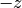 direction, with
the  axis oriented to the right and the
axis oriented to the right and the  axis
upward.
axis
upward.
We explicitely added the element type tet4 when creating the pyramid. Without it, pyFormex would have interpreted the 4-plex Formex as a quadrilateral (though in this case a non-planar one).
Using the pattern() or mpattern() functions¶
In the previous examples the Formices were created by directly specifying the coordinate data. That is fine for small structures, but quickly becomes cumbersome when the structures get larger. The pattern() and mpattern() functions reduce the amount of input needed to create a Formex from scratch.
Both functions create a series of points from a simple string. Each character of the string is interpreted either as a unit step in one of the coordinate directions, or as some other simple action. These functions are thus very valuable in creating geometry where the points lie on a regular grid.
The first point of the list is [0,0,0]. Each character from the input string is interpreted as a code specifying how to move to the next point. Currently defined are the following codes: 0 = goto origin [0,0,0], 1..8 move in the x,y plane, 9 remains at the same place. When looking at the plane with the x-axis to the right and the y-axis up, 1 = East, 2 = North, 3 = West, 4 = South, 5 = NE, 6 = NW, 7 = SW, 8 = SE. Adding 16 to the ordinal of the character causes an extra move of +1 in the z-direction. Adding 48 causes an extra move of -1. This means that ‘ABCDEFGHI’, resp. ‘abcdefghi’, correspond with ‘123456789’ with an extra z = +/- 1. This gives the following schema:
z+=1 z unchanged z -= 1
F B E 6 2 5 f b e
| | |
| | |
C----I----A 3----9----1 c----i----a
| | |
| | |
G D H 7 4 8 g d h
The special character ‘/’ can be put before any character to make the move without making a connection. The effect of any other character is undefined.
The pattern() function creates a straight line segment between each pair of subsequent points, and thus results in a 2-plex Formex. Here’s an example:
F = Formex(pattern('1234'))
draw(F)
It creates the same circumference of a unit square as above (see figure A square.), but is much simpler than the explicit specification of the coordinates we used before. Figure Images generated from the patterns ‘127’, ‘11722’ and ‘22584433553388’ shows some more examples.
Images generated from the patterns ‘127’, ‘11722’ and ‘22584433553388’
The mpattern() function is more general than pattern() in that it allows the creation of Formices of any plexitude. Each subsequent point is added to the same element, until a ‘-‘ character or the end of the string is found. The following example creates a square:
F = Formex(mpattern('123'))
draw(F)
If it comes as a surprise that there are only 3 characters for a square, remember that the origin is always added as first point.
Some simple wireframe patterns are defined in simple.py and are ready for use. These pattern strings are stacked in a dictionary called ‘Pattern’. Items of this dictionary can be accessed like Pattern['cube']. They still need to be processed by the pattern() function to produce coordinates:
#!/usr/bin/env pyformex
from simple import Pattern
F = Formex(pattern(Pattern['cube']))
print F.shape()
draw(F,color=blue,view='iso')
A wireframe cube
The printed out shape of the Formex is (12,2,3), confirming that what we have created here is not a 3D solid cube, nor the planes bounding that cube, but merely twelve straight line segments forming the edges of a cube.
The view='iso' option in the draw statement rotates the camera so that it looks in the [-1,-1,-1] direction. This is one of the predefined viewing directions and can also be set from the Views menu or using the button.
While the pattern() and mpattern() functions can only generate points lying on a regular cartesian grid, pyFormex provides a wealth of transformation functions to move the points to other locations after they were created. Also, the Turtle plugin module provides a more general mechanism to create planar wireframe structures.
Reading coordinates from a file or a string¶
Sometimes you want to read the coordinates from a file, rather than specifying them directly in your script. This is especially handy if you want to import geometry from some other program that can not export data in a format that is understood by pyFormex. There usually is a way to write the bare coordinates to a file, and the pyFormex scripting language provides all the necessary tools to read them back.
As an example, create (in the same folder where you store your scripts) the text file square.txt with the following contents:
0, 0, 0, 0, 1, 0, 1, 1, 0, 1, 0, 0,
1, 1, 0, 2, 1, 0, 2, 2, 0,
1, 2, 0,
Then create and execute the following script. It will generate the same square as above (figure A square.).
#!/usr/bin/env pyformex
chdir(__file__)
F = Formex.fromfile('square.txt',sep=',',nplex=4)
draw(F)
The chdir(__file__) statement sets your working directory to the directory where the script is located, so that the filename can be specified without adding the full pathname. The Formex.fromfile() call reads the coordinates (as specified, separated by ‘,’) from the file and groups them into elements of the specified plexitude (4). The grouping of coordinates on a line is irrelevant: all data could just as well be given on a single line, or with just one value per line. The separator character can be accompanied by extra whitespace. Use a space character if your data are only separated by whitespace.
There is a similar Formex.fromstring() method, which reads coordinates directly from a string in the script. If you have a lot of coordinates to specify, this may be far more easy than using the list formatting. The following script yields the same result as the above one:
#!/usr/bin/env pyformex
F = Formex.fromstring("""
0 0 0 0 1 0 1 1 0 1 0 0
1 1 0 2 1 0 2 2 0 1 2 0
""",nplex=4)
draw(F)
Here we used the default separator, which is a space.
Note
Make sure to use Formex.fromfile(), to distinguish it from Coords.fromfile() and numpy.fromfile().
Concatenation and lists of Formices¶
Multiple Formices can be concatenated to form one new Formex. There are many ways to do this, but the simplest is to use the ‘+’ or += operator. Notice the diffference: the + operator does not changing any of the arguments, but the += operator adds the second argument to the first, changing its definition:
F = Formex(pattern('1234'))
G = Formex(pattern('5'))
H = F + G
draw(H)
displays the same Formex as:
F += G
draw(F)
but in the latter case, the original definition of F is lost.
The += operator is one of the very few operations that change an existing Formex. Nearly all other operations return a resulting Formex without changing the original ones.
Because a Formex has a single plexitude and element type, concatenation is restricted to Formices of the same plexitude and with the same eltype. If you want to handle structures with elements of different plexitude as a single object, you have to group them in a list:
F = Formex(pattern('1234'))
G = Formex([0.5,0.5,0.])
H = [F,G]
draw(H,color=red)
This draws the circumference of a unit square (F: plexitude 2) and the center point of the square (G: plexitude 1), both in red.
A square and its center point.
Formex property numbers¶
Apart from the coordinates of its points, a Formex object can also store a set of property numbers. This is a set of integers, one for every element of the Formex. The property numbers are stored in an attribute p of the Formex. They can be set, changed or deleted, and be used for any purpose the user wants, e.g. to number the elements in a different order than their appearence in the coordinate array. Or they can be used as pointers into a large database that stores all kind of properties for that element. Just remember that a Formex either has no property numbers, or a complete set of numbers: one for every element.
Property numbers can play an important role in the modeling process, because they present some means of tracking how the resulting Formex was created. Indeed, each transformation of a Formex that preserves its structure, will also preserve the property numbers. Concatenation of Formices with property numbers will also concatenate the property numbers. If any of the concatenated Formices does not have property numbers, it will receive value 0 for all its elements. If all concatenated Formices are without properties, so will be the resulting Formex.
On transformations that change the structure of the Formex, such as replication, each element of the created Formex will get the property number of the Formex element it was generated from.
To add properties to a Formex, use the setProp() method. It ensures that the property array is generated with the correct type and shape. If needed, the supplied values are repeated to match the number of elements in the Formex. The following script creates four triangles, the first and third get property number 1, the second and fourth get property 3.:
F = Formex(mpattern('12-34-14-32'))
F.setProp([1,3])
print F.p # --> [1 3 1 3]
As a convenience, you can also specify the property numbers as a second argument to the Formex constructor. Once the properties have been created, you can safely change individual values by directly accessing the p attribute:
F = Formex(mpattern('12-34-14-32'),[1,3])
F.p[3] = 4
print(F.p) # --> [1 3 1 4]
draw(F)
drawNumbers(F)
When you draw a Formex with property numbers using the default draw options (i.e. no color specified), pyFormex will use the property numbers as indices in a color table, so different properties are shown in different colors. The default color table has eight colors: [black, red, green, blue, cyan, magenta, yellow, white] and will wrap around if a property value larger than 7 is used. You can however specify any other and larger colorset to be used for drawing the property colors. The following figure shows different renderings of the structure created by the above script. The drawNumbers() function draws the element numbers (starting from 0).
A Formex with property numbers drawn as colors. From left to right: wireframe, flat, flat (transparent), flatwire (transparent).
Remark how the flat rendering mode obscures the element numbers. We make them reappear by using the transparent mode, which can be toggled with the button.
Adding properties to a Formex is often done with the sole purpose of drawing with multiple colors. But remember you are free to use the properties for any purpose you want. You can even save, change and restore them throughout the lifetime of a Formex object, thus you can attibrute multiple property sets to a Formex.
Getting information about a Formex¶
While the visual feedback on the canvas usually gives a good impression of the structure you created, at times the view will not provide enough information or not precise enough. Viewing a 3D geometry on a 2D screen can at times even be very misleading. The most reliable source for checking your geometry will always be the Formex data itself. We have already seen that you can print the coordinates of the Formex F just by printing the Formex itself: print(F). Likewise you can see the property numbers from a print(F.p) instruction.
But once you start using large data structures, this information may become difficult to handle. You are usually better of with some generalized information about the Formex object. The Formex class provides a number of methods that return such information. The following table lists the most interesting ones.
| Function | Return value |
|---|---|
| F.nelems() | The number of elements in the Formex |
| F.nplex() | The plexitude of the Formex (the number of points in each element of the Formex) |
| F.prop() | The properties array (same as F.p) |
| F.bbox() | The bounding box of the Formex |
| F.center() | The center of the bbox of the Formex |
| F.sizes() | The size of the bbox of the Formex |
Saving images¶
Often you will want to save an image of the created geometry to a file, e.g. to include it in some document. This can readily be done from the File ‣ Save Image menu. You just have to fill in the file name and click the Save buttton. You can specify the file format by using the appropriate extension in the file name. The default and recommended format is png, but pyFormex can save in commonly used bitmap formats like jpg or gif as well. If you have installed gl2ps (see Install additional software), you can even save in a number of vector formats, such as eps or svg.
But you can also create the images from inside your script. Just import the image module and call the image.save() function:
import gui.image
image.save("my_image.png")
Often you will want to change some settings, like rendering mode or background color, to get a better looking picture. Since the main goal of pyFormex is to automate the creation and transformation of geometrical models, all these settings can be changed from inside your script as well. The following code was used to create the four images in figure A Formex with property numbers drawn as colors. From left to right: wireframe, flat, flat (transparent), flatwire (transparent). above.
import gui.image
chdir(__file__)
reset()
bgcolor(white)
linewidth(2)
canvasSize(200,300)
F = Formex(mpattern('12-34-14-32'),[1,3])
F.p[3] = 4
clear()
draw(F)
drawNumbers(F)
wireframe()
image.save('props-000.png')
flat()
transparent(False)
image.save('props-001.png')
transparent(True)
image.save('props-002.png')
flatwire()
image.save('props-003.png')
The following table lists the interactive menu option and the correspondant programmable function to be used to change some of the most common rendering settings.
| Purpose | Function(s) | Menu item |
|---|---|---|
| Background color | bgcolor() | Viewport ‣ Background Color |
| Line width | linewidth() | Viewport ‣ LineWidth |
| Canvas Size | canvasSize() | Viewport ‣ Canvas Size |
| Render Mode | wireframe(), flat(), flatwire(), smooth(), smoothwire() | Viewport ‣ Render Mode |
| Transparency | transparent() |
Transforming a Formex¶
Until now, we’ve only created simple Formices. The strength of pyFormex however is the ease to generate large geometrical models by a sequence of mathematical transformations. After creating a initial Formex, you can transform it by creating copies, translations, rotations, projections,...
The Formex class has an wide range of powerful transformation methods available, and this is not the place to treat them all. The reference manual pyFormex reference manual describes them in detail.
We will illustrate the power of the Formex transformations by studying one of the examples included with pyFormex. The examples can be accessed from the Examples menu option.
Note
If you have installed multiple script directories, the examples may be found in a submenu Scripts ‣ Examples.
When a script is selected from this menu, it will be executed automatically. Select the Examples ‣ Level ‣ Beginner ‣ Helix example. You will see an image of a complex helical frame structure:
A helical frame structure (Helix example)
Yet the geometry of this complex structure was built from the very simple pyFormex script shown below (Use File ‣ Edit script to load it in your editor.
1 2 3 4 5 6 7 8 9 10 11 12 13 14 15 16 | #!/usr/bin/env pyformex
"""Helix example from pyFormex"""
m = 36 # number of cells along helix
n = 10 # number of cells along circular cross section
reset()
setDrawOptions({'clear':True})
F = Formex(pattern("164"),[1,2,3]); draw(F)
F = F.replic(m,1.,0); draw(F)
F = F.replic(n,1.,1); draw(F)
F = F.translate(2,1.); draw(F,view='iso')
F = F.cylindrical([2,1,0],[1.,360./n,1.]); draw(F)
F = F.replic(5,m*1.,2); draw(F)
F = F.rotate(-10.,0); draw(F)
F = F.translate(0,5.); draw(F)
F = F.cylindrical([0,2,1],[1.,360./m,1.]); draw(F)
draw(F,view='right')
|
The script shows all steps in the building of the helical structure. We will explain and illustrate them one by one. If you want to see the intermediate results in pyFormex during execution of the script, you can set a wait time between subsequent drawing operations with Settings ‣ Draw Wait Time. Or alternatively, you can start the script with the button: pyFormex will then halt before each draw function and wait until you push the again.
The script starts (lines 3-4) with setting the two parameters m and n. It is always a good idea to put constants in a variable. That makes it easy to change the values in a single place when you want to create another structure: your model has become a parametric model.
Lines 5 resets the drawing options to the defaults. It is not essential in this script but it is often a good idea to restore the defaults, in case they would have been changed by a script tha was run previously. Setting the clear=True option in line 6 makes sure the subsequent drawing instructions will remove the previous step from the canvas.
In line 7 we create the basic geometrical entity for this structure: a triangle consisting of three lines, which we give the properties 1, 2 and 3, so that the three lines are shown in a different color:
F = Formex(pattern("164"),[1,2,3])
The basic Formex
This basic Formex is copied m times with a translation step 1.0 (this is precisely the length of the horizontal edge of the triangle) in the 0 direction:
F = F.replic(m,1.,0)
Replicated in x-direction
Then, the new Formex is copied n times with the same step size in the direction 1.
F = F.replic(n,1.,1)
Replicated in y-direction
Now a copy of this last Formex is translated in direction ‘2’ with a translation step of ‘1’. This necessary for the transformation into a cilinder. The result of all previous steps is a rectangular pattern with the desired dimensions, in a plane z=1.
F = F.translate(2,1); drawit(F,'iso')
This pattern is rolled up into a cilinder around the 2-axis.
F = F.cylindrical([2,1,0],[1.,360./n,1.]); drawit(F,'iso')
This cilinder is copied 5 times in the 2-direction with a translation step of ‘m’ (the lenght of the cilinder).
F = F.replic(5,m,2); drawit(F,'iso')
The next step is to rotate this cilinder -10 degrees around the 0-axis. This will determine the pitch angle of the spiral.
F = F.rotate(-10,0); drawit(F,'iso')
This last Formex is now translated in direction ‘0’ with a translation step of ‘5’.
F = F.translate(0,5); drawit(F,'iso')
Finally, the Formex is rolled up, but around a different axis then before. Due to the pitch angle, a spiral is created. If the pitch angle would be 0 (no rotation of -10 degrees around the 0-axis), the resulting Formex would be a torus.
F = F.cylindrical([0,2,1],[1.,360./m,1.]); drawit(F,'iso')
drawit(F,'right')
Converting a Formex to a Finite Element model¶
The feModel() method is important in exporting the geometry to finite element (FE) programs. A Formex often contains many points with (nearly) the same coordinates. In a finite element model, theses points have to be merged into a single nod, to express the continuity of the material. This is exactly whatfeModel() does. It returns a tuple of two numpy arrays (nodes,elems), where
- nodes is a float array with shape (?,3), containing the coordinates of the merged points (nodes),
- elems is an integer array with shape (F.nelems(),F.nplex()), describing each element by a list of node numbers. The elements and their nodes are in the same order as in F.
>>> from simple import *
>>> F = Formex(pattern(Pattern['cube']))
>>> draw(F)
>>> nodes,elems = F.feModel()
>>> print 'Nodes',nodes
>>> print 'Elements',elems
Nodes
[[ 0. 0. 0.]
[ 1. 0. 0.]
[ 0. 1. 0.]
[ 1. 1. 0.]
[ 0. 0. 1.]
[ 1. 0. 1.]
[ 0. 1. 1.]
[ 1. 1. 1.]]
Elements
[[0 1]
[1 3]
[3 2]
[2 0]
[0 4]
[1 5]
[3 7]
[2 6]
[4 5]
[5 7]
[7 6]
[6 4]]
The reverse operation of transforming a finite element model back into a Formex is quite simple: Formex(nodes[elems]) will indeed be identical to the original F (within the tolerance used in merging of the nodes).
>>> G = Formex(nodes[elems])
>>> print allclose(F.f,G.f)
True
The allclose funcion in the second line tests that all coordinates in bopth arrays are the same, within a small tolerance.

Documentation
Table Of Contents
- pyFormex tutorial
- The philosophy
- Getting started
- Some basic Python concepts
- Some basic NumPy concepts
- The Formex data model
- Creating a Formex
- Concatenation and lists of Formices
- Formex property numbers
- Getting information about a Formex
- Saving images
- Transforming a Formex
- Converting a Formex to a Finite Element model